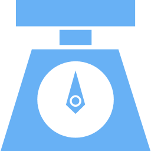

A Better Way to Prepare
Every day, hundreds of hours are spent in labs all across the world. This time is used diluting stock solution into a smaller concentration. This menial process is a large waste of time, so here is presented a system which will be able to dilute stock solution in a manner useful for labs.
Fast
Create 2L of diluted solution in under 5 minutes

Accurate
Precision scale is used to ensure 95% purity for concentrations as low as 0.05M
Smart
A closed-loop feedback systems ensures reliable performance